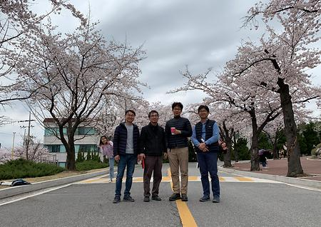
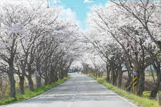
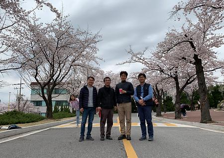
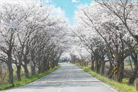

겨우내 움츠렸던🎆 꽃봉오리들이 따뜻한 😎햇살에 수줍은 얼굴을 내보이는 봄. 거리 곳곳에 만발한 봄꽃에 은은한 향기가 물씬 풍긴다.😎 이곳 상명대학교 천안캠퍼스도 학교 건물 사이사이에 펼쳐진 벚꽃들의 향연에 한껏 달아올랐다. 낭만적인 분위기의 교정을 걸으며 벚꽃을 보고 있노라면 새록새록 떠오르는 첫사랑의 기억과 소중한 추억들. 그 생생한 현장을 알아보았다.

  
 